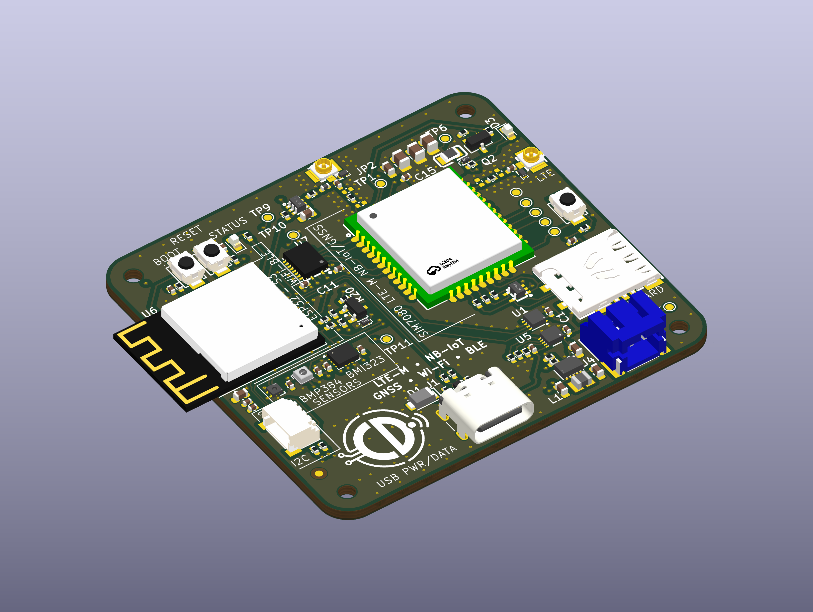

CAD design & engineering evidence
EdgeLink S3 Cellular — ESP32-S3 Cellular IoT
A four-layer KiCad design integrating ESP32-S3 processing with SIM7080G LTE-M / NB-IoT connectivity and GNSS. USB-C, battery charging, power-path management and buck-boost regulation support the connected platform. Hierarchical schematics, PCB layout and engineering documentation bring together cellular interfaces, motion and environmental sensing, and manufacturing preparation.
ESP32-S3 · SIM7080G · LTE-M / NB-IoT · GNSS · KiCad
View GitHub Repository